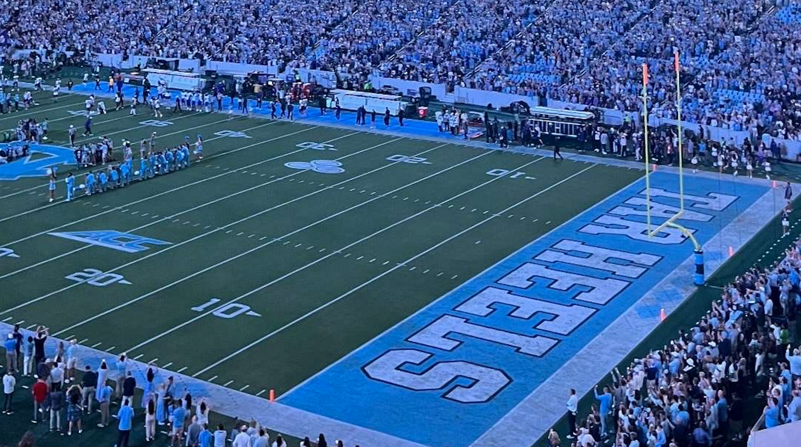
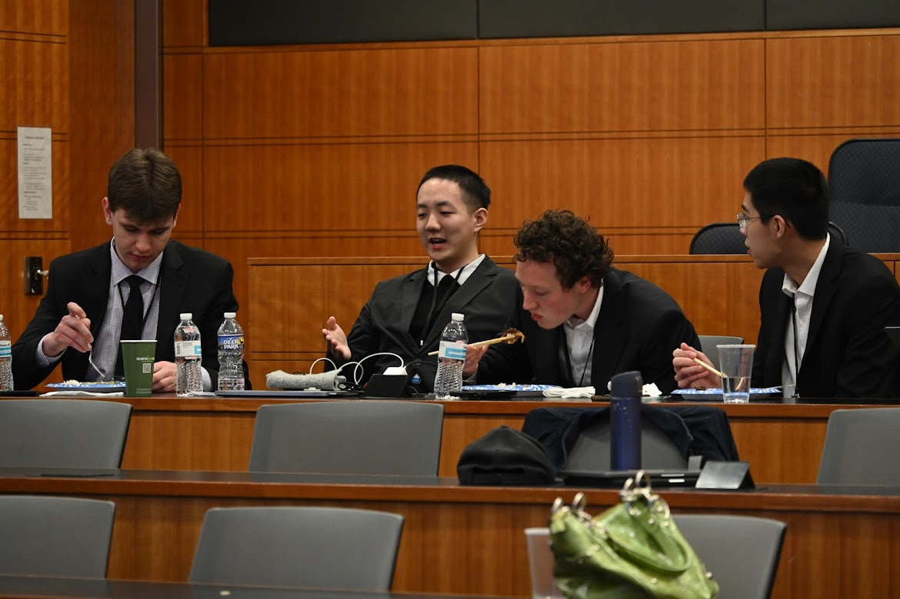
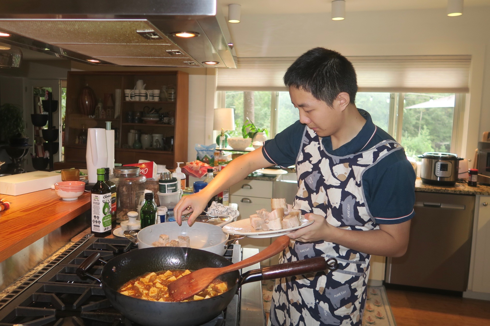
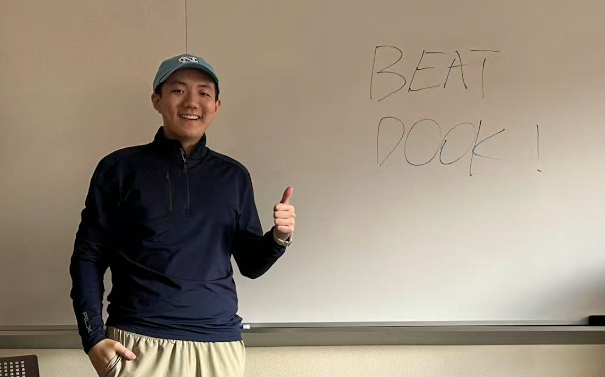
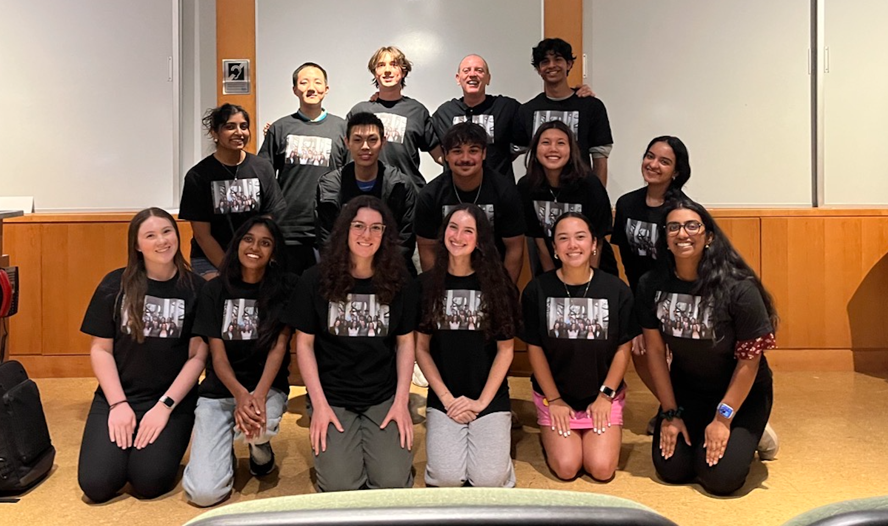

I took upper-level law classes during my Exchange year at UNC-Chapel Hill. I spent one year in Media Law, learning the basics of First Amendment legal issues and delving deeper into emerging AI Law, with intersections with IP Law/Criminal Law/Surveillance/Taiwan-China-US Relations. I also took Environmental Law and Sports Law, and earned the Summer Research Assistant position for Prof. Donald Hornstein at UNC Law. Furthermore, I improved my English Speaking and writing through two English classes, learning storytelling and medical English. On top of that, I participated in the Peer Med mentoring program, joined the UNC Golf Club, and promoted Chinese food to American friends.